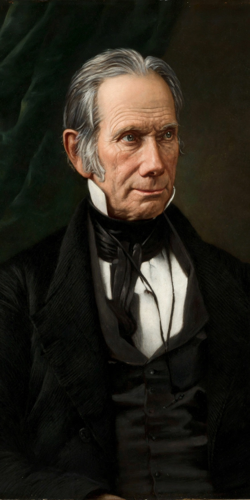

| Henry Clay | |
|---|---|
 Henry Clay, the "Great Compromiser" | |
| Born | April 12, 1777, Hanover County, Virginia, U.S. |
| Died | June 29, 1852 (aged 75), Washington, D.C., U.S. |
| Political party | Democratic-Republican; National Republican; Whig |
| Offices | 9th U.S. Secretary of State (1825–1829); Speaker of the House (1811–1814, 1815–1820, 1823–1825); U.S. Senator from Kentucky |
| Signature policy | The American System |
Henry Clay Sr. (April 12, 1777 – June 29, 1852) was an American lawyer and statesman who represented Kentucky in both the Senate and the House of Representatives. He was the seventh Speaker of the House of Representatives and the ninth secretary of state. Clay ran unsuccessfully for president in 1824, 1832, and 1844 and is remembered as the "Great Compromiser" for his central role in brokering the Missouri Compromise of 1820, the compromise tariff that ended the Nullification Crisis in 1833, and the Compromise of 1850.
Clay was born in Hanover County, Virginia, the seventh son of a Baptist minister who died when Clay was four. With little formal schooling he studied law in Richmond under George Wythe and was admitted to the Virginia bar in 1797. He moved to Lexington, Kentucky, where he built a lucrative legal practice and entered state politics.
Elected to the U.S. House in 1811 and chosen Speaker on his first day, Clay was a leading "War Hawk" pressing for the War of 1812 against Britain. After the war he championed the American System: protective tariffs, a national bank, and federal investment in roads and canals to bind the Union together and develop domestic industry. He served on the commission that negotiated the Treaty of Ghent.
In the deadlocked election of 1824, Clay threw his support to John Quincy Adams, who then made him secretary of state—an arrangement Jackson's supporters denounced as a "corrupt bargain." Clay founded the Whig Party with other opponents of Andrew Jackson and ran for president against him in 1832 and again in 1844, losing narrowly to James K. Polk in the latter contest. His legislative settlements repeatedly delayed—but could not finally prevent—the sectional conflict over slavery.
Clay died of tuberculosis in Washington in 1852 and became the first person to lie in state in the United States Capitol rotunda. Abraham Lincoln, who called Clay his "beau ideal of a statesman," eulogized him, and Clay's unionism deeply influenced Lincoln's own politics.
Missouri Compromise · Compromise of 1850 · Whig Party · Andrew Jackson · Sam Rayburn